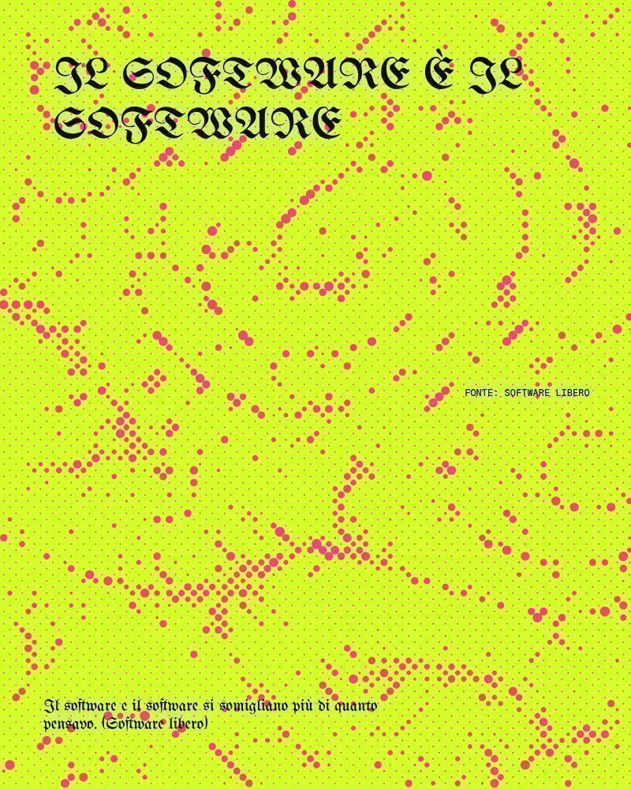
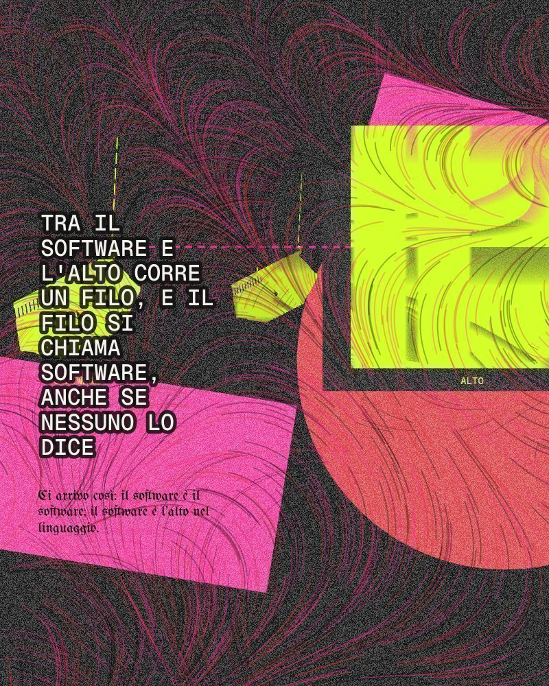

Tra il software e l'alto corre un filo

1/4 · Tra il software e l'alto corre un filo

2/4 · Il software è il software
Il software e il software si somigliano più di quanto pensavo. (Software libero)

3/4 · Il software è l'alto nel linguaggio
Due nomi per quasi la stessa cosa. (Software libero)

4/4 · Tra il software e l'alto corre un filo, e il filo si chiama software, anche se nessuno lo dice
Ci arrivo così: il software è il software; il software è l'alto nel linguaggio.
a conti fatti, tra il software e l'alto corre un filo, e il filo si chiama software, anche se nessuno lo dice
cosa c'entra il software con l'alto?